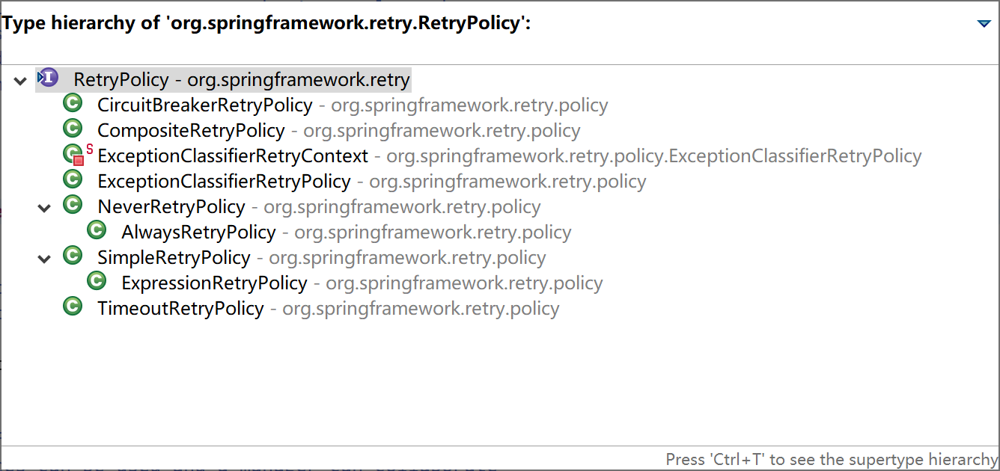
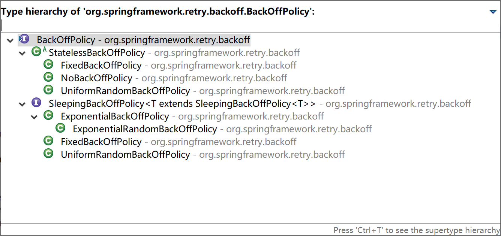
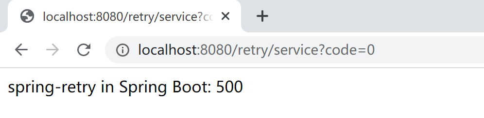
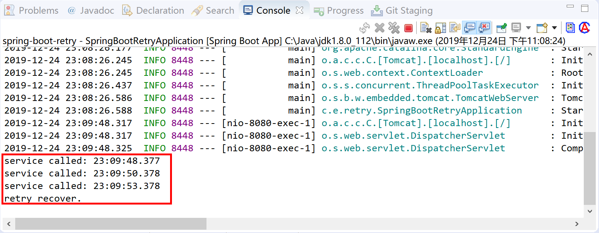
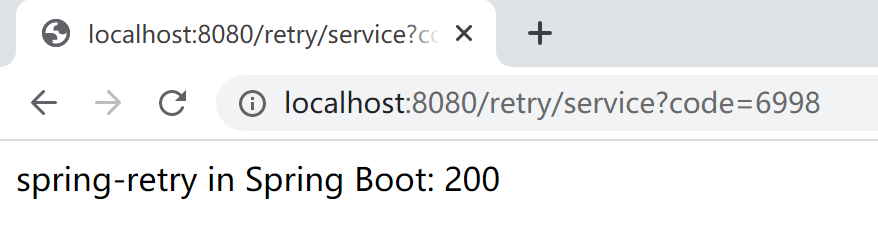
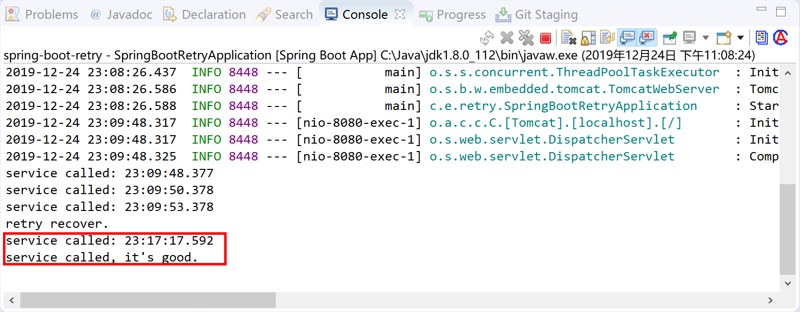

10.3 异常的重试
在实际项目中，有些业务场景需要我们对一些异常情况下的任务进行重试，比如：调用第三方接口RPC服务，可能由于网络抖动、连接超时等网络异常，多尝试几次就可以恢复正常。
如果我们要做重试，为特定的某个操作提供重试功能，就需要硬编码。大概逻辑基本都是写个循环，根据返回或异常，计数失败的次数，然后设定退出条件。这样做，每个操作都要写这种类似的代码，而且重试逻辑和业务逻辑混在一起，给维护和扩展带来了麻烦。从面向对象和面向方面（AOP）的角度来看，我们应该把重试的代码独立出来。
Spring提供的独立出来的重试框架就是spring-retry项目，它是从Spring Batch（从2.2.0版本中独立出来）中独立出来的一个项目，主要实现了重试和熔断，被用到Spring Batch、Spring Integration等项目中。
This project provides declarative retry support for Spring applications. It is used in Spring Batch, Spring Integration, and others. Imperative retry is also supported for explicit usage.
spring-retry对于重试是有场景限制的，不是什么场景都适合重试，比如参数校验不合法、写操作等（要考虑写是否幂等）都不适合重试。远程调用超时、网络突然中断可以重试。在微服务治理框架中，通常都有自己的重试与超时配置，比如dubbo可以设置retries=1，timeout=500调用失败只重试1次，超过500ms调用仍未返回则调用失败。在spring retry中可以指定需要重试的异常类型，并设置每次重试的间隔以及如果重试失败是继续重试还是熔断（停止重试）。
10.3.1 重试策略
spring-retry通过接口RetryPolicy（重试策略）及其8个实现类提供了8种重试策略。

- NeverRetryPolicy：只允许调用RetryCallback一次，不允许重试；
- AlwaysRetryPolicy：允许无限重试，直到成功，此方式逻辑不当会导致死循环；
- SimpleRetryPolicy：固定次数重试策略，默认重试最大次数为3次，是RetryTemplate默认使用的策略；
- ExpressionRetryPolicy：表达式重试策略，符合表达式就会重试；
- TimeoutRetryPolicy：超时时间重试策略，默认超时时间为1秒，在指定的超时时间内允许重试；
- ExceptionClassifierRetryPolicy：设置不同异常的重试策略，类似组合重试策略，区别在于这里只区分不同异常的重试；
- CircuitBreakerRetryPolicy：有熔断功能的重试策略，需设置3个参数openTimeout、resetTimeout和delegate，如果不在熔断状态，则允许重试；
- CompositeRetryPolicy：组合重试策略，有两种组合方式，乐观组合重试策略是指只要有一个策略允许重试即可以重试，悲观组合重试策略是指只要有一个策略不允许重试即不可以重试，但不管哪种组合方式，组合中的每一个策略都会执行。
10.3.2 退避策略
两次重试之间需要立即重试还是等待一段时间后重试，就是退避策略。
比如发生网络错误，立即重试将导致立即失败，最好的办法是等待一小段时间后重试，这还可以防止很多服务同时重试导致的DDoS（Distributed Denial of Service）。
spring-retry通过接口BackOffPolicy（退避策略）及其5个实现类提供了5种退避策略。

- FixedBackOffPolicy：固定时间的退避策略，需设置参数sleeper和backOffPeriod，sleeper指定等待策略，默认是Thread.sleep，即线程休眠，backOffPeriod指定休眠时间，默认1秒；
- NoBackOffPolicy：无退避算法策略，即需要重试时立即重试；
- UniformRandomBackOffPolicy：随机时间退避策略，需设置sleeper、minBackOffPeriod和maxBackOffPeriod，该策略在[minBackOffPeriod, maxBackOffPeriod]之间取一个随机休眠时间，minBackOffPeriod默认500毫秒，maxBackOffPeriod默认1500毫秒；
- ExponentialBackOffPolicy：指数退避策略，需设置参数sleeper、initialInterval、maxInterval和multiplier，initialInterval指定初始休眠时间，默认100毫秒，maxInterval指定最大休眠时间，默认30秒，multiplier指定乘数，即下一次休眠时间为当前休眠时间*multiplier；
- ExponentialRandomBackOffPolicy：随机指数退避策略，引入随机乘数，相对ExponentialBackOffPolicy和FixedBackOffPolicy可能会引起很多服务同时重试导致DDoS，使用随机休眠时间就可以避免这种情况。
10.3.3 无状态重试
在最简单的情况下，重试只是一个while循环：RetryTemplate可以一直尝试，直到成功或失败。RetryContext包含一些状态以确定是重试还是中止。但是，这个状态在堆栈上，不需要在全局任何地方存储它。因此，我们称之为无状态重试。无状态重试和有状态重试之间的区别包含在RetryPolicy的实现中（RetryTemplate可以处理这两者）。在无状态重试中，回调始终在重试失败时的同一线程中执行。
10.3.4 有状态重试
无状态重试情况下产生异常，并不会将其抛出去，这对于事务性调用，是不可容忍的，因为上层框架需要获得异常进行事务的回滚操作。这个时候就应当使用有状态重试。
BinaryExceptionClassifier classifier =
new BinaryExceptionClassifier(Collections.singleton(Throwable.class));
RetryState state = new DefaultRetryState("mykey", false, classifier);
String result = template.execute((RetryCallback<String, Throwable>)context -> {
remoteInvoke();
return "ret";
}, context -> {
return "recovery";
}, state);
事务的开销一般较大，这里虽然能够有状态重试进行事务的回滚，但并不建议去进行事务的重试，而应当使用failfast机制，可能更加合理一些。
10.3.5 声明式重试
spring-retry官方给出了最简单的声明式重试代码示例。通过@EnableRetry、@Retryable和@Recover注解完成声明式重试的代码的编写。
@Configuration
@EnableRetry
public class Application {
@Bean
public Service service() {
return new Service();
}
}
@Service
class Service {
@Retryable(RemoteAccessException.class)
public void service() {
// ... do something
}
@Recover
public void recover(RemoteAccessException e) {
// ... panic
}
}
以上代码：在调用service方法时，如果发生RemoteAccessException异常就开始重试（默认重试策略，重试3次），如果重试不成功，则调用recover方法。
10.3.6 命令式重试
spring-retry官方给出了最简单的命令式重试代码示例。
命令式重试使用Spring一贯的API风格：RetryTemplate模板实现，是线程安全的。
RetryTemplate将重试、熔断功能封装到模板中，提供健壮和不易出错的API供我们使用。
RetryTemplate template = RetryTemplate.builder()
.maxAttempts(3)
.fixedBackoff(1000)
.retryOn(RemoteAccessException.class)
.build();
template.execute(ctx -> {
// ... do something
});
10.3.7 在Spring Boot中使用spring-retry
新建Spring Boot web应用，在pom文件种添加spring-retry和aspectjweaver依赖。
<dependency>
<groupId>org.springframework.boot</groupId>
<artifactId>spring-boot-starter-web</artifactId>
</dependency>
<dependency>
<groupId>org.springframework.retry</groupId>
<artifactId>spring-retry</artifactId>
</dependency>
<dependency>
<groupId>org.aspectj</groupId >
<artifactId>aspectjweaver</artifactId >
</dependency>
在Spring Boot启动类上使用注解@EnableRetry打开重试配置。
package com.example.retry;
import org.springframework.boot.SpringApplication;
import org.springframework.boot.autoconfigure.SpringBootApplication;
import org.springframework.retry.annotation.EnableRetry;
@SpringBootApplication
@EnableRetry
public class SpringBootRetryApplication {
public static void main(String[] args) {
SpringApplication.run(SpringBootRetryApplication.class, args);
}
}
添加重试服务类RetryService，在service方法上标注@Retryable，在recover方法上标注@Recover。
package com.example.retry.service;
import java.time.LocalTime;
import org.springframework.retry.annotation.Backoff;
import org.springframework.retry.annotation.Recover;
import org.springframework.retry.annotation.Retryable;
import org.springframework.stereotype.Service;
@Service
public class RetryService {
@Retryable(value = Exception.class, maxAttempts = 3, backoff = @Backoff(delay = 2000, multiplier = 1.5))
public int service(int code) throws Exception {
System.out.println("service called: " + LocalTime.now());
if (code == 0) {
throw new Exception("EXCCEPTION: It's bad.");
}
System.out.println("service called, it's good.");
return 200;
}
@Recover
public int recover(Exception e){
System.out.println("retry recover.");
return 500;
}
}
添加控制器RetryController类，与用户进行交互。
package com.example.retry.controller;
import org.springframework.beans.factory.annotation.Autowired;
import org.springframework.web.bind.annotation.RequestMapping;
import org.springframework.web.bind.annotation.RestController;
import com.example.retry.service.RetryService;
@RestController
@RequestMapping("/retry/")
public class RetryController {
@Autowired
RetryService service;
@RequestMapping("/service")
public String service(int code) throws Exception {
int result = service.service(code);
return "spring-retry in Spring Boot: "+ result;
}
}
打开浏览器，输入http://localhost:8080/retry/service?code=0地址，通过传入code=0这个参数，触发异常重试，测试。

通过后台观察，重试了3次，最后调用了@Recover标注的方法。

打开浏览器，输入http://localhost:8080/retry/service?code=6998地址，通过传入code=6998这个参数，不触发异常，调用服务不需要重试，测试。

通过后台观察，没有异常，没有重试，程序代码逻辑正常。

本小节示例项目代码：
https://github.com/gyzhang/SpringBootCourseCode/tree/master/spring-boot-retry